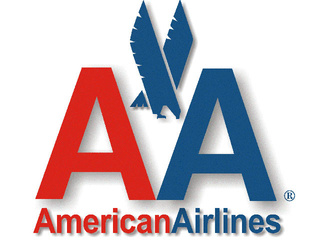
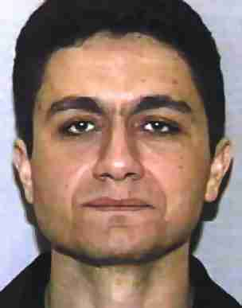

Was Mohamed Atta being employed by American Airlines?
Saturday, May 28, 2011


Diane Graney is the second witness (besides Lynn Howland whom I presented in my last blog entry) with precise recollections of Mohamed Atta, but completely ignored by the 9/11 Commission. Graney worked at Portland Airport on 9/11. She didn't see the alleged hijackers Atta and Al-Omari, but recognized Atta's face from the photo that was published in the aftermath. She is positive that Atta, dressed in an American Airlines uniform and able to identify himself as an AA pilot, tried prior to 9/11 to achieve a jump seat on a US Airways flight.Compare this to the particulars provided by Lynn Howland. According to her, Atta was "wearing a white pilot type or oxford shirt, no tie and blue pilot type slacks" and carried a "really cheap pilot bag". Furthermore, Atta approached her and asked if she was going to fly American 11. Apparently he wanted to jump seat the flight.
Here is a list of persons who occasionally are allowed to take a jump seat in the cockpit (from Wikipedia): In aircraft, jump seats - which are officially termed auxiliary crew stations - can be located in cockpits or passenger cabins. In cockpits, jump seats are provided for individuals who are not operating the aircraft. These might include trainee pilots, off-duty crew members in transition to another airport (see deadheading), government officials (such as Federal Aviation Administration staff), or airline staff.There are also witnesses in Florida confirming that Atta boasted about his status as an American Airlines pilot. Yet the 9/11 Commission has completely blacked out the accounts of Lynn Howland and Diane Graney and missed to pursue their hints that Atta presented himself on several occasions as an AA pilot in order to jump seat a certain flight.
Was American Airlines aware about Atta's activities? And why has the 9/11 Commission failed to follow this important trace?
Here is Diane Graney's account (date: 9/22/01):
Diane Graney, date of birth ........... employed as a Customer Service Agent CSA and Ground Security Coordinator GSC, U.S. Airways USAIR, Portland International Jetport, 1001 Westbrook Street, Portand, Maine, telephone number 207775-5210, was interviewed at her place of employment. After being advised of the identity of the interviewing agent and the nature of the interview, she provided the following information:
Graney has been employed with USAIR for approximately twelve years. As a CSA for USAIR, Graney's duties include conducting passenger check-ins, checking baggage, making seat assignments, and issuing tickets. She performs her duties at either the USAIR Ticket Counter or at the individual airport gates. As a GSC, she deals with aircraft, airport, and general security issues.On September 11, 2001, from 5:00 AM to 1:00 PM, Graney was working at the USAIR ticket counter. At some point in her shift she heard of the attacks on the World Trade Center in New York, and that one of the flights was American Airlines Flight 11 out of Logan Airport in Boston. As a GSC, she went and pulled the passenger lists for the US AIR flights to Logan to see if any USAIR passengers had a connection to thje flight. Graney saw that there were two passengers on USAIR Flight 5930 to Logan that had a connection to American Airlines Flight 11. The two names were Mohamed Atta and Abdulaziz Alomari. She also noticed the two were to sit in First Class on American Airlines Flight 11. Graney thought it was suspicious that these two passengers could have taken a better, more direct flight then what they had scheduled.
Graney observed that Atta and Alomari had checked two bags in at the US AIR Ticket Counter, and that Michael Tuohey was the CSA who checked them in. She spoke to Tuohey about the two passengers, and he advised her of what he had observed. She then contacted Chuck Severance, US AIR Station Manager, and informed him of what happened and what she had discovered.
Graney advised that later when she saw Atta's picture on the news, she believed she had seen him before. She thought he may have tried to jump seat once with USAIR, and he was in uniform using an American Airlines pilot identification. She believed that this happened within the last six months. She advised she searched the USAIR jump seat peaperwork to see who had gone through for June 2001, July 2001, and August 2001, but was unable to find Atta's name. She advised the jump seat forms are only kept for 90 days. She became more concerned about this when she heard on the news that some American Airlines uniforms were stolen in Italy.
Graney was then requested to review a photograph array containing twelve pictures of twelve of the alleged hijackers. Graney identified the picture of Mohamed Atta as the person she remembered seeing prior to September 11, 2001 attempting to jump seat a USAIR flight. She also identified the picture of Marwan Alshehhi as someone she had seen sometime at the airport ticket counter. She identified the picture of Waleed Alshehri as someone who looks familiar. Both Graney and the interviewing agent dated and initialed the pictures she identified.
{kind=link}
{kind=link}